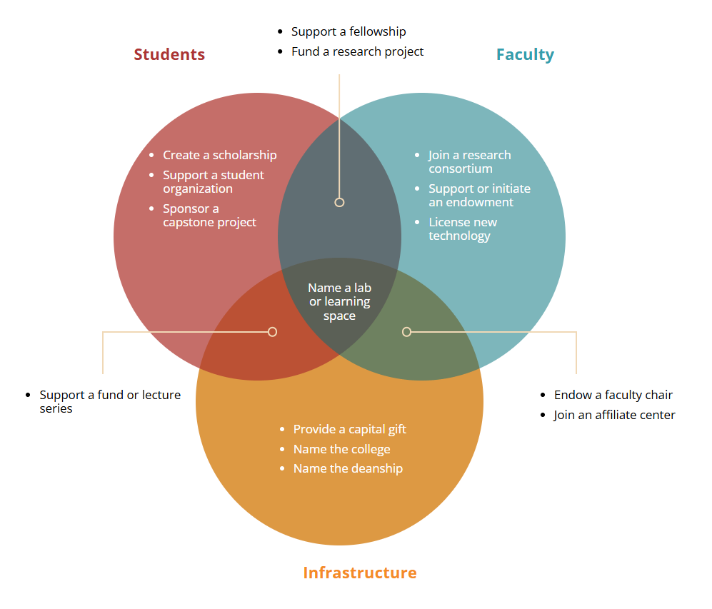
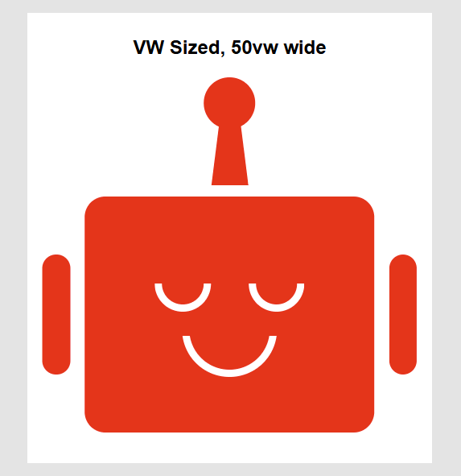

Work Samples

A lot of my work gets updated or replaced, I have some technical examples and some projects I played a major role in.
-
This site!
I had a lot of fun making it, mostly designed in-browser to show off techniques that I enjoy.
All of the art, graphics, design, code, and vibes are 100% me, no AI necessary. Plenty of CSS chicanery, accessible HTML, and other nerdery if you poke through the assets and code.
-
Red Hat Documentation
-While at Red Hat I got to work on their software documentation site. It hadn't seen significant updates in many years when I arrived, and the customer relationship and code situation where in a poor state.
Within a year I went from front-end SME to a technical lead, and pitched and led an effort that led to a 32 point increase in the NPS score (-17.5 to 14.6).
- Recognized as one of Red Hat's top 150 premier technical contributors in 2023
- Discovery, System Architecture, & Project Planning - I interviewed documentation authors, gathered customer feedback, and created analytics reports to understand the current state and set a baseline for improvement. I then wrote up a project plan and system architecture for a new CMS for their 200+ authors all legacy and future content that was approved.
- Technical Leadership - I pitched and led the effort to rebuild the front-end of documentation addressing design, accessibility, and helped solve content issues with documentation authors with complex needs.
- UX Leadership - partnered with our design team to help solve the user interface, user experience, and technical challenges that sprung out of our documentation system, editorial process, and our author and end user needs.
-
HTML & CSS Venn diagram

A client wanted a visualization of different ways of contributing to their school. Since the content seemed important to their part of the site, I felt it'd be better as well structured HTML for SEO and accessibility.
It's in the HTML once, the "desktop version" is a venn diagram, the "mobile version" appears as headings and lists.
See it on CodePen -
Scaleable pixel perfect graphic

A nerdy flex and an example I made for the article "Scaling CSS Components with BEM, REMs, & EMs, it's the Lullabot logo at the time. It's pixel perfect thanks to an equation I wrote to help me get the correct measurements, from an image of the logo to
See it on CodePenems. -
Simple collapsible container
This is small pragmatic Javascript Class I wrote, it nails the aria and accessibility toggle that can expand/collapsable a container; just add CSS. Check out the doc block in JS, it can be dropped in and used out of the box, or practically anything can be tweaked for a few different use cases.
At time of writing it's used on the main menu dropdowns on Usenix's website.
Example and Docs on CodePen